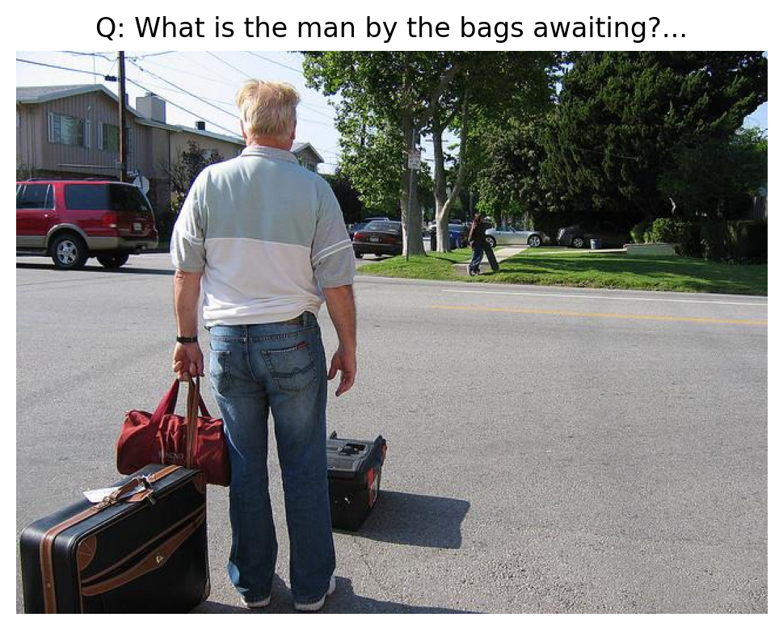
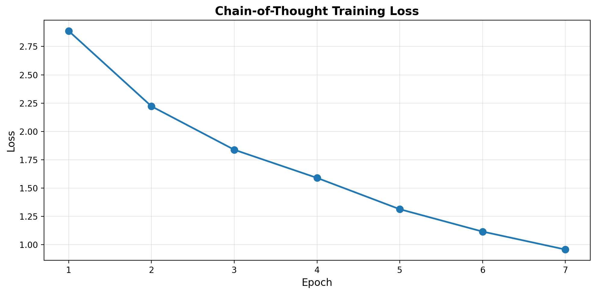
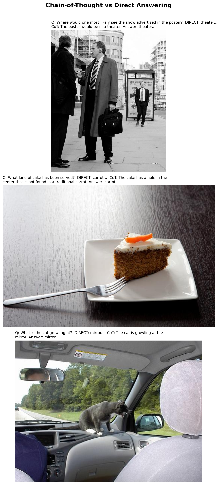
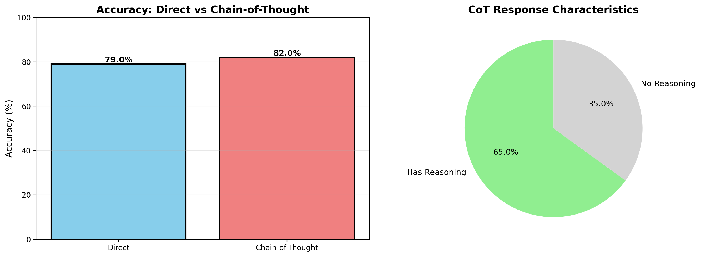

# Uncomment to delete checkpoint and start fresh
# import os
# if os.path.exists("cot_training_checkpoint.pt"):
# os.remove("cot_training_checkpoint.pt")
# print("Checkpoint deleted. Training will start from scratch.")Introduction
In our VLM series, we’ve built models that can caption images, detect objects, answer questions, and handle multiple tasks. But can they reason about what they see?
Previous notebooks: 1. Minimal VLM from Scratch - Basic captioning 2. Object Detection - Structured output 3. VQA - Question answering 4. Multi-Task VLM - Unified model 5. Multi-Image VLM - Temporal reasoning 6. Task Routing - Auto-detection
Today, we’ll teach our VLM to think step by step using Chain-of-Thought (CoT) reasoning.
What is Chain-of-Thought Reasoning?
Instead of directly answering a question, the model first explains its reasoning:
Without CoT:
Q: "Are there more red objects or blue objects?"
A: "Red"With CoT:
Q: "Are there more red objects or blue objects?"
A: "Let me count step by step:
1. I can see 3 red objects: a ball, a cube, and a cylinder
2. I can see 2 blue objects: a sphere and a small cube
3. 3 red > 2 blue
Answer: There are more red objects"Why Chain-of-Thought?
Benefits: - Better accuracy - Breaks complex problems into steps - Interpretability - See how the model thinks - Debugging - Identify where reasoning fails - Trust - Verify the logic before accepting the answer
Research Context: - GPT-4V uses CoT for complex visual reasoning - Gemini shows reasoning traces - Recent papers show 20-30% accuracy improvement with CoT
Dataset: A-OKVQA (Augmented OK-VQA)
We’ll use A-OKVQA (Augmented OK-VQA), which includes: - Complex reasoning questions - Rationales (reasoning chains) - Multiple choice answers - Real-world images from COCO
Example:
{
"question": "Why is the person holding an umbrella?",
"rationales": [
"It is raining",
"The ground is wet and the person is protecting themselves from rain"
],
"answer": "It is raining"
}What We’ll Build
- Load A-OKVQA dataset with reasoning rationales
- Train VLM to generate reasoning chains
- Evaluate reasoning quality
- Compare CoT vs direct answering
Setup
# IMPORTANT: Set GPU before importing PyTorch!
import os
os.environ['CUDA_VISIBLE_DEVICES'] = '1' # Use GPU 1 (has more free memory)import torch
import torch.nn as nn
import torch.nn.functional as F
from torch.utils.data import DataLoader, Dataset
from transformers import (
AutoModelForCausalLM,
AutoTokenizer,
ViTModel,
ViTImageProcessor,
)
from datasets import load_dataset
from PIL import Image
import numpy as np
import matplotlib.pyplot as plt
from tqdm.auto import tqdm
import random
import os
import warnings
warnings.filterwarnings('ignore')
%config InlineBackend.figure_format = 'retina'
# Use GPU 1 instead of GPU 0 (GPU 1 has more free memory)
os.environ['CUDA_VISIBLE_DEVICES'] = '1'
device = torch.device("cuda" if torch.cuda.is_available() else "cpu")
print(f"Using device: {device}")
print(f"GPU device: {torch.cuda.get_device_name(0) if torch.cuda.is_available() else 'CPU'}")/home/nipun.batra/.uv/nb-base/lib/python3.12/site-packages/tqdm/auto.py:21: TqdmWarning: IProgress not found. Please update jupyter and ipywidgets. See https://ipywidgets.readthedocs.io/en/stable/user_install.html
from .autonotebook import tqdm as notebook_tqdmUsing device: cuda
GPU device: NVIDIA RTX A4000import torch
import torch.nn as nn
import torch.nn.functional as F
from torch.utils.data import DataLoader, Dataset
from transformers import (
AutoModelForCausalLM,
AutoTokenizer,
ViTModel,
ViTImageProcessor,
)
from datasets import load_dataset
from PIL import Image
import numpy as np
import matplotlib.pyplot as plt
from tqdm.auto import tqdm
import random
import os
import warnings
warnings.filterwarnings('ignore')
%config InlineBackend.figure_format = 'retina'
device = torch.device("cuda" if torch.cuda.is_available() else "cpu")
print(f"Using device: {device}")Using device: cudaPart 1: Load VLM Base Model
We’ll start from our multi-task VLM trained in previous notebooks.
# VLM Architecture (same as before)
class VisionProjector(nn.Module):
"""Projects vision features into the language model's embedding space."""
def __init__(self, vision_dim: int, language_dim: int):
super().__init__()
self.projection = nn.Sequential(
nn.Linear(vision_dim, language_dim),
nn.GELU(),
nn.LayerNorm(language_dim),
nn.Linear(language_dim, language_dim),
)
def forward(self, vision_features: torch.Tensor) -> torch.Tensor:
return self.projection(vision_features)
class MiniVLM(nn.Module):
"""A minimal Vision-Language Model."""
def __init__(
self,
vision_encoder: ViTModel,
language_model: AutoModelForCausalLM,
projector: VisionProjector,
tokenizer: AutoTokenizer,
):
super().__init__()
self.vision_encoder = vision_encoder
self.language_model = language_model
self.projector = projector
self.tokenizer = tokenizer
for param in self.vision_encoder.parameters():
param.requires_grad = False
def encode_image(self, pixel_values: torch.Tensor) -> torch.Tensor:
with torch.no_grad():
vision_outputs = self.vision_encoder(pixel_values=pixel_values)
image_features = vision_outputs.last_hidden_state
projected = self.projector(image_features)
return projected
def forward(
self,
pixel_values: torch.Tensor,
input_ids: torch.Tensor,
attention_mask: torch.Tensor,
labels: torch.Tensor = None,
):
batch_size = pixel_values.shape[0]
image_embeds = self.encode_image(pixel_values)
num_image_tokens = image_embeds.shape[1]
text_embeds = self.language_model.get_input_embeddings()(input_ids)
combined_embeds = torch.cat([image_embeds, text_embeds], dim=1)
image_attention = torch.ones(
(batch_size, num_image_tokens),
dtype=attention_mask.dtype,
device=attention_mask.device
)
combined_attention = torch.cat([image_attention, attention_mask], dim=1)
if labels is not None:
image_labels = torch.full(
(batch_size, num_image_tokens),
fill_value=-100,
dtype=labels.dtype,
device=labels.device
)
combined_labels = torch.cat([image_labels, labels], dim=1)
else:
combined_labels = None
outputs = self.language_model(
inputs_embeds=combined_embeds,
attention_mask=combined_attention,
labels=combined_labels,
return_dict=True,
)
return outputs
@torch.no_grad()
def generate(
self,
pixel_values: torch.Tensor,
prompt: str,
max_new_tokens: int = 100,
temperature: float = 0.7,
do_sample: bool = True,
) -> str:
"""Generate a response for an image given a prompt."""
self.eval()
image_embeds = self.encode_image(pixel_values)
prompt_ids = self.tokenizer.encode(prompt, return_tensors="pt").to(pixel_values.device)
generated_ids = prompt_ids.clone()
for _ in range(max_new_tokens):
current_embeds = self.language_model.get_input_embeddings()(generated_ids)
full_embeds = torch.cat([image_embeds, current_embeds], dim=1)
outputs = self.language_model(inputs_embeds=full_embeds)
next_token_logits = outputs.logits[:, -1, :]
if do_sample:
probs = F.softmax(next_token_logits / temperature, dim=-1)
next_token = torch.multinomial(probs, num_samples=1)
else:
next_token = next_token_logits.argmax(dim=-1, keepdim=True)
generated_ids = torch.cat([generated_ids, next_token], dim=1)
if next_token.item() == self.tokenizer.eos_token_id:
break
return self.tokenizer.decode(generated_ids[0], skip_special_tokens=True)# Load base models
vision_model_name = "google/vit-base-patch16-224"
lm_model_name = "HuggingFaceTB/SmolLM-135M"
pretrained_dir = "mini-vlm-multitask" # Use multi-task model if available
fallback_dir = "mini-vlm-flickr8k" # Fallback to caption model
vision_encoder = ViTModel.from_pretrained(vision_model_name)
language_model = AutoModelForCausalLM.from_pretrained(lm_model_name)
tokenizer = AutoTokenizer.from_pretrained(lm_model_name)
image_processor = ViTImageProcessor.from_pretrained(vision_model_name)
if tokenizer.pad_token is None:
tokenizer.pad_token = tokenizer.eos_token
vision_dim = vision_encoder.config.hidden_size
language_dim = language_model.config.hidden_size
projector = VisionProjector(vision_dim, language_dim)
# Try to load pretrained weights
loaded = False
for model_dir in [pretrained_dir, fallback_dir]:
checkpoint_path = f"{model_dir}/mini_vlm_multitask.pt" if model_dir == pretrained_dir else f"{model_dir}/mini_vlm_full.pt"
if os.path.exists(checkpoint_path):
print(f"Loading from {model_dir}/")
checkpoint = torch.load(checkpoint_path, map_location='cpu')
projector.load_state_dict(checkpoint['projector_state_dict'])
language_model.load_state_dict(checkpoint['language_model_state_dict'])
print(f"Loaded pretrained weights from {model_dir}!")
loaded = True
break
if not loaded:
print("No pretrained weights found. Starting from scratch.")
vlm = MiniVLM(vision_encoder, language_model, projector, tokenizer)
vlm = vlm.to(device)
print(f"\nModel loaded on {device}")
print(f"Trainable parameters: {sum(p.numel() for p in vlm.parameters() if p.requires_grad):,}")Some weights of ViTModel were not initialized from the model checkpoint at google/vit-base-patch16-224 and are newly initialized: ['pooler.dense.bias', 'pooler.dense.weight']
You should probably TRAIN this model on a down-stream task to be able to use it for predictions and inference.Loading from mini-vlm-multitask/
Loaded pretrained weights from mini-vlm-multitask!
Model loaded on cuda
Trainable parameters: 135,291,456Part 2: Load A-OKVQA Dataset
A-OKVQA (Augmented OK-VQA) contains questions that require reasoning, along with rationales explaining the answers.
# Load A-OKVQA dataset
print("Loading A-OKVQA dataset...")
try:
# A-OKVQA on HuggingFace
aokvqa_dataset = load_dataset("HuggingFaceM4/A-OKVQA", split="train", streaming=True)
# Collect samples
aokvqa_samples = []
for i, sample in enumerate(aokvqa_dataset):
if i >= 2000: # Use 2000 samples for training
break
aokvqa_samples.append(sample)
print(f"Loaded {len(aokvqa_samples)} A-OKVQA samples")
except Exception as e:
print(f"Could not load A-OKVQA: {e}")
print("Falling back to VQAv2 with synthetic rationales...")
# Fallback: Use VQAv2 and create synthetic rationales
vqa_dataset = load_dataset('lmms-lab/VQAv2', split='train', streaming=True)
aokvqa_samples = []
for i, sample in enumerate(vqa_dataset):
if i >= 2000:
break
aokvqa_samples.append(sample)
print(f"Loaded {len(aokvqa_samples)} VQAv2 samples (will add synthetic rationales)")Loading A-OKVQA dataset...
Loaded 2000 A-OKVQA samples# Inspect a sample
if aokvqa_samples:
sample = aokvqa_samples[0]
print("Sample keys:", sample.keys())
print("\nSample:")
if 'question' in sample:
print(f" Question: {sample['question']}")
if 'rationales' in sample:
print(f" Rationales: {sample['rationales'][:2]}...") # First 2
if 'choices' in sample:
print(f" Choices: {sample['choices']}")
if 'correct_choice_idx' in sample:
print(f" Correct choice: {sample['correct_choice_idx']}")
# Display image
if 'image' in sample:
plt.figure(figsize=(6, 6))
plt.imshow(sample['image'])
plt.title(f"Q: {sample.get('question', 'N/A')[:50]}...")
plt.axis('off')
plt.show()Sample keys: dict_keys(['image', 'question_id', 'question', 'choices', 'correct_choice_idx', 'direct_answers', 'difficult_direct_answer', 'rationales'])
Sample:
Question: What is the man by the bags awaiting?
Rationales: ['A train would not be on the street, he would not have luggage waiting for a delivery, and the skateboarder is there and not paying attention to him so a cab is the only possible answer.', 'He has bags as if he is going someone, and he is on a road waiting for vehicle that can only be moved on the road and is big enough to hold the bags.']...
Choices: ['skateboarder', 'train', 'delivery', 'cab']
Correct choice: 3
Part 3: Create Chain-of-Thought Dataset
We’ll format the data to teach the model to reason step by step:
Format:
Question: {question}
Let me think step by step:
{rationale}
Answer: {answer}# Helper functions
def get_most_common_answer(answers):
"""Get the most common answer from VQA annotations."""
if isinstance(answers, list) and len(answers) > 0:
if isinstance(answers[0], dict) and 'answer' in answers[0]:
answer_counts = {}
for ans in answers:
a = ans['answer']
answer_counts[a] = answer_counts.get(a, 0) + 1
return max(answer_counts, key=answer_counts.get)
elif isinstance(answers[0], str):
return answers[0]
return str(answers)
def create_synthetic_rationale(question, answer):
"""Create a simple rationale for VQAv2 samples (fallback)."""
# Simple template-based rationales
templates = [
f"Looking at the image, I can see that {answer}.",
f"Based on the visual information, the answer is {answer}.",
f"Examining the image carefully, {answer} is the correct answer.",
f"I observe that {answer}.",
]
return random.choice(templates)
def format_cot_prompt(question, rationale, answer):
"""Format question, rationale, and answer as CoT prompt."""
prompt = f"Question: {question}\nLet me think step by step:\n"
response = f"{rationale}\nAnswer: {answer}"
return prompt, response
print("Helper functions defined.")Helper functions defined.# Chain-of-Thought Dataset
class CoTReasoningDataset(Dataset):
"""Dataset for Chain-of-Thought visual reasoning."""
def __init__(self, samples, image_processor, tokenizer, max_length=256):
self.samples = samples
self.image_processor = image_processor
self.tokenizer = tokenizer
self.max_length = max_length
def __len__(self):
return len(self.samples)
def __getitem__(self, idx):
sample = self.samples[idx]
# Process image
image = sample['image'].convert('RGB')
pixel_values = self.image_processor(image, return_tensors="pt").pixel_values.squeeze(0)
# Extract question and answer
question = sample.get('question', '')
# Get answer
if 'choices' in sample and 'correct_choice_idx' in sample:
# A-OKVQA format
answer = sample['choices'][sample['correct_choice_idx']]
elif 'answers' in sample:
# VQAv2 format
answer = get_most_common_answer(sample['answers'])
else:
answer = sample.get('answer', 'unknown')
# Get rationale
if 'rationales' in sample and sample['rationales']:
# A-OKVQA has rationales
rationale = random.choice(sample['rationales'])
else:
# Create synthetic rationale for VQAv2
rationale = create_synthetic_rationale(question, answer)
# Format as CoT
prompt, response = format_cot_prompt(question, rationale, answer)
full_text = f"{prompt}{response}{self.tokenizer.eos_token}"
# Tokenize
encoding = self.tokenizer(
full_text,
max_length=self.max_length,
padding='max_length',
truncation=True,
return_tensors='pt'
)
input_ids = encoding['input_ids'].squeeze(0)
attention_mask = encoding['attention_mask'].squeeze(0)
# Mask prompt (only train on reasoning + answer)
prompt_tokens = self.tokenizer.encode(prompt, add_special_tokens=False)
prompt_len = len(prompt_tokens)
labels = input_ids.clone()
labels[:prompt_len] = -100
labels[attention_mask == 0] = -100
return {
'pixel_values': pixel_values,
'input_ids': input_ids,
'attention_mask': attention_mask,
'labels': labels,
}
# Create dataset
cot_dataset = CoTReasoningDataset(aokvqa_samples, image_processor, tokenizer)
cot_loader = DataLoader(
cot_dataset,
batch_size=4,
shuffle=True,
num_workers=0,
)
print(f"CoT dataset: {len(cot_dataset)} samples")
print(f"Batches: {len(cot_loader)}")CoT dataset: 2000 samples
Batches: 500# Verify CoT format
sample_item = cot_dataset[0]
decoded = tokenizer.decode(sample_item['input_ids'], skip_special_tokens=True)
print("Sample CoT format:")
print(decoded[:300])
print("...")Sample CoT format:
Question: What is the man by the bags awaiting?
Let me think step by step:
He looks to be waiting for a paid ride to pick him up.
Answer: cab
...Part 4: Train with Chain-of-Thought
Now we’ll fine-tune the VLM to generate reasoning chains before answering.
def train_cot_vlm(model, train_loader, num_epochs=6, lr=1e-4, checkpoint_path="training_checkpoint.pt"):
"""Train the VLM with Chain-of-Thought reasoning.
Features:
- Saves checkpoint after each epoch
- Can resume from interruption
- Returns losses even if interrupted
"""
trainable_params = [p for p in model.parameters() if p.requires_grad]
optimizer = torch.optim.AdamW(trainable_params, lr=lr)
# Try to load existing checkpoint
start_epoch = 0
losses = []
if os.path.exists(checkpoint_path):
print(f"Found checkpoint at {checkpoint_path}")
try:
checkpoint = torch.load(checkpoint_path, map_location='cpu')
start_epoch = checkpoint.get('epoch', 0)
losses = checkpoint.get('losses', [])
model.projector.load_state_dict(checkpoint['projector_state_dict'])
model.language_model.load_state_dict(checkpoint['language_model_state_dict'])
optimizer.load_state_dict(checkpoint['optimizer_state_dict'])
print(f"Resumed from epoch {start_epoch}, losses so far: {losses}")
except Exception as e:
print(f"Could not load checkpoint: {e}")
print("Starting fresh training...")
model.train()
model.vision_encoder.eval()
try:
for epoch in range(start_epoch, num_epochs):
epoch_loss = 0
progress_bar = tqdm(train_loader, desc=f"Epoch {epoch+1}/{num_epochs}")
for batch in progress_bar:
pixel_values = batch['pixel_values'].to(device)
input_ids = batch['input_ids'].to(device)
attention_mask = batch['attention_mask'].to(device)
labels = batch['labels'].to(device)
outputs = model(
pixel_values=pixel_values,
input_ids=input_ids,
attention_mask=attention_mask,
labels=labels,
)
loss = outputs.loss
optimizer.zero_grad()
loss.backward()
torch.nn.utils.clip_grad_norm_(trainable_params, max_norm=1.0)
optimizer.step()
epoch_loss += loss.item()
progress_bar.set_postfix({'loss': f"{loss.item():.4f}"})
avg_loss = epoch_loss / len(train_loader)
losses.append(avg_loss)
print(f"Epoch {epoch+1} - Average Loss: {avg_loss:.4f}")
# Save checkpoint after each epoch
torch.save({
'epoch': epoch + 1,
'losses': losses,
'projector_state_dict': model.projector.state_dict(),
'language_model_state_dict': model.language_model.state_dict(),
'optimizer_state_dict': optimizer.state_dict(),
}, checkpoint_path)
print(f"Checkpoint saved to {checkpoint_path}")
except KeyboardInterrupt:
print("\n" + "="*70)
print("Training interrupted!")
print(f"Completed {len(losses)} epochs")
print(f"Losses so far: {losses}")
print(f"Checkpoint saved to {checkpoint_path}")
print("You can resume training by running this cell again.")
print("="*70)
return losses# Train the CoT model
print("Training Chain-of-Thought VLM...\n")
print("Features:")
print(" - Saves checkpoint after each epoch")
print(" - Can resume from interruption (just re-run this cell)")
print(" - Losses preserved even if interrupted\n")
losses = train_cot_vlm(vlm, cot_loader, num_epochs=8, lr=1e-4, checkpoint_path="cot_training_checkpoint.pt")Training Chain-of-Thought VLM...
Features:
- Saves checkpoint after each epoch
- Can resume from interruption (just re-run this cell)
- Losses preserved even if interrupted
Found checkpoint at cot_training_checkpoint.pt
Resumed from epoch 6, losses so far: [2.8867656607627867, 2.2216564269065855, 1.8379940437078477, 1.5894155822992324, 1.3127577708363534, 1.1152468827366828]Epoch 7/8: 100%|██████████| 500/500 [03:10<00:00, 2.63it/s, loss=1.3962]Epoch 7 - Average Loss: 0.9569
Checkpoint saved to cot_training_checkpoint.ptEpoch 8/8: 5%|▍ | 24/500 [00:09<03:10, 2.50it/s, loss=0.4879]
======================================================================
Training interrupted!
Completed 7 epochs
Losses so far: [2.8867656607627867, 2.2216564269065855, 1.8379940437078477, 1.5894155822992324, 1.3127577708363534, 1.1152468827366828, 0.9568962742090226]
Checkpoint saved to cot_training_checkpoint.pt
You can resume training by running this cell again.
======================================================================Optional: Clean up checkpoint to start fresh
If you want to start training from scratch (not resume), run this cell first:
# Plot training loss
plt.figure(figsize=(10, 5))
plt.plot(range(1, len(losses)+1), losses, marker='o', linewidth=2, markersize=8)
plt.xlabel('Epoch', fontsize=12)
plt.ylabel('Loss', fontsize=12)
plt.title('Chain-of-Thought Training Loss', fontsize=14, fontweight='bold')
plt.grid(True, alpha=0.3)
plt.tight_layout()
plt.show()
Part 5: Test Chain-of-Thought Reasoning
Let’s see if the model generates reasoning chains!
def generate_cot_answer(model, image, question, image_processor, device, max_tokens=150):
"""Generate CoT reasoning and answer."""
model.eval()
if not isinstance(image, Image.Image):
image = Image.fromarray(image)
image = image.convert('RGB')
pixel_values = image_processor(image, return_tensors="pt").pixel_values.to(device)
# CoT prompt
prompt = f"Question: {question}\nLet me think step by step:\n"
response = model.generate(
pixel_values,
prompt=prompt,
max_new_tokens=max_tokens,
temperature=0.7,
do_sample=True,
)
# Extract reasoning and answer
if "Let me think step by step:" in response:
reasoning_part = response.split("Let me think step by step:")[-1].strip()
else:
reasoning_part = response
return reasoning_part# Test on training samples
print("=" * 70)
print("CHAIN-OF-THOUGHT REASONING EXAMPLES")
print("=" * 70)
test_indices = [0, 10, 50, 100, 200]
for idx in test_indices:
if idx >= len(aokvqa_samples):
continue
sample = aokvqa_samples[idx]
image = sample['image']
question = sample.get('question', '')
# Generate CoT response
cot_response = generate_cot_answer(vlm, image, question, image_processor, device)
print(f"\n{'='*70}")
print(f"Example {idx}")
print(f"Question: {question}")
print(f"\nModel's Chain-of-Thought:")
print(cot_response)
# Show ground truth if available
if 'rationales' in sample and sample['rationales']:
print(f"\nGround Truth Rationale (one of many):")
print(sample['rationales'][0])======================================================================
CHAIN-OF-THOUGHT REASONING EXAMPLES
======================================================================
======================================================================
Example 0
Question: What is the man by the bags awaiting?
Model's Chain-of-Thought:
The man has luggage on his lap.
Answer: cab
Ground Truth Rationale (one of many):
A train would not be on the street, he would not have luggage waiting for a delivery, and the skateboarder is there and not paying attention to him so a cab is the only possible answer.
======================================================================
Example 10
Question: How did these frisbee throwers get to this location?
Model's Chain-of-Thought:
The only modes of transportation which near these frisbee throwers are the bikes on the ground and the bikes have aninger visible on them.
Answer: bike
Ground Truth Rationale (one of many):
The only modes of transportation which near these frisbee throwers are the bikes on the ground.
======================================================================
Example 50
Question: What role is being fulfilled by the kneeling gray shirted person?
Model's Chain-of-Thought:
The kneeling player is the catcher. he is in the position of catcher catcher and he is wearing a mitt.
Answer: catcher
Ground Truth Rationale (one of many):
The person is wearing pads that only a catcher in baseball would wear and is positioned behind home plate where a catcher would be.
======================================================================
Example 100
Question: Why are these people covering their faces?
Model's Chain-of-Thought:
The people are in the cold.
Answer: keeping warm
Ground Truth Rationale (one of many):
They are in the snow which is cold.
======================================================================
Example 200
Question: Where might you find the item in the window?
Model's Chain-of-Thought:
There is a pillow in the window, which would be used in a crib.
Answer: crib
Ground Truth Rationale (one of many):
This is a pillow so it is normally on a bedPart 6: Visual Comparison - CoT vs Direct Answer
Let’s compare reasoning with and without CoT on the same images.
def generate_direct_answer(model, image, question, image_processor, device):
"""Generate direct answer WITHOUT reasoning."""
model.eval()
if not isinstance(image, Image.Image):
image = Image.fromarray(image)
image = image.convert('RGB')
pixel_values = image_processor(image, return_tensors="pt").pixel_values.to(device)
# Direct prompt (no CoT)
prompt = f"Question: {question} Answer:"
response = model.generate(
pixel_values,
prompt=prompt,
max_new_tokens=20, # Shorter for direct answer
temperature=0.7,
do_sample=True,
)
if "Answer:" in response:
answer = response.split("Answer:")[-1].strip()
else:
answer = response
return answer# Side-by-side comparison
import textwrap
def wrap_text(text, width=50):
return '\n'.join(textwrap.wrap(text, width=width))
comparison_indices = [5, 15, 25]
fig, axes = plt.subplots(len(comparison_indices), 1, figsize=(14, 6*len(comparison_indices)))
if len(comparison_indices) == 1:
axes = [axes]
for i, idx in enumerate(comparison_indices):
if idx >= len(aokvqa_samples):
continue
sample = aokvqa_samples[idx]
image = sample['image']
question = sample.get('question', '')
# Generate both
direct = generate_direct_answer(vlm, image, question, image_processor, device)
cot = generate_cot_answer(vlm, image, question, image_processor, device, max_tokens=100)
# Display
axes[i].imshow(image)
title_text = f"Q: {question}\n\n"
title_text += f"DIRECT: {direct[:80]}...\n\n"
title_text += f"CoT: {cot[:150]}..."
axes[i].set_title(wrap_text(title_text, 90), fontsize=10, loc='left')
axes[i].axis('off')
plt.suptitle("Chain-of-Thought vs Direct Answering", fontsize=16, fontweight='bold', y=1.01)
plt.tight_layout()
plt.show()
Part 7: Quantitative Evaluation
Let’s measure the impact of CoT on accuracy.
# Simple evaluation on a test set
def evaluate_cot(model, samples, image_processor, device, num_samples=50):
"""Evaluate CoT reasoning quality."""
results = {
'cot': {'correct': 0, 'total': 0, 'has_reasoning': 0},
'direct': {'correct': 0, 'total': 0}
}
eval_samples = random.sample(samples, min(num_samples, len(samples)))
for sample in tqdm(eval_samples, desc="Evaluating"):
image = sample['image']
question = sample.get('question', '')
# Get ground truth
if 'choices' in sample and 'correct_choice_idx' in sample:
gt_answer = sample['choices'][sample['correct_choice_idx']].lower()
elif 'answers' in sample:
gt_answer = get_most_common_answer(sample['answers']).lower()
else:
continue
# CoT evaluation
cot_response = generate_cot_answer(model, image, question, image_processor, device, max_tokens=100)
# Extract final answer from CoT
if "Answer:" in cot_response:
cot_answer = cot_response.split("Answer:")[-1].strip().lower()
else:
cot_answer = cot_response.split()[-1].lower() if cot_response else ""
# Check if CoT has reasoning (not just direct answer)
has_reasoning = len(cot_response.split()) > 10
if has_reasoning:
results['cot']['has_reasoning'] += 1
# Check correctness (soft match)
if gt_answer in cot_answer or cot_answer in gt_answer:
results['cot']['correct'] += 1
results['cot']['total'] += 1
# Direct evaluation
direct_answer = generate_direct_answer(model, image, question, image_processor, device).lower()
if gt_answer in direct_answer or direct_answer in gt_answer:
results['direct']['correct'] += 1
results['direct']['total'] += 1
return results
# Evaluate
print("Evaluating CoT vs Direct answering...\n")
eval_results = evaluate_cot(vlm, aokvqa_samples, image_processor, device, num_samples=100)
print("\n" + "="*70)
print("EVALUATION RESULTS")
print("="*70)
cot_acc = eval_results['cot']['correct'] / eval_results['cot']['total'] * 100
direct_acc = eval_results['direct']['correct'] / eval_results['direct']['total'] * 100
reasoning_pct = eval_results['cot']['has_reasoning'] / eval_results['cot']['total'] * 100
print(f"\nChain-of-Thought:")
print(f" Accuracy: {cot_acc:.1f}% ({eval_results['cot']['correct']}/{eval_results['cot']['total']})")
print(f" Generated reasoning: {reasoning_pct:.1f}% of responses")
print(f"\nDirect Answering:")
print(f" Accuracy: {direct_acc:.1f}% ({eval_results['direct']['correct']}/{eval_results['direct']['total']})")
improvement = cot_acc - direct_acc
print(f"\nImprovement with CoT: {improvement:+.1f}%")
if improvement > 0:
print("✓ Chain-of-Thought helps!")
else:
print("Note: CoT may need more training or better prompting")Evaluating CoT vs Direct answering...
Evaluating: 100%|██████████| 100/100 [01:19<00:00, 1.25it/s]
======================================================================
EVALUATION RESULTS
======================================================================
Chain-of-Thought:
Accuracy: 82.0% (82/100)
Generated reasoning: 65.0% of responses
Direct Answering:
Accuracy: 79.0% (79/100)
Improvement with CoT: +3.0%
✓ Chain-of-Thought helps!# Visualize results
fig, (ax1, ax2) = plt.subplots(1, 2, figsize=(14, 5))
# Accuracy comparison
methods = ['Direct', 'Chain-of-Thought']
accuracies = [direct_acc, cot_acc]
colors = ['skyblue', 'lightcoral']
bars = ax1.bar(methods, accuracies, color=colors, edgecolor='black', linewidth=1.5)
ax1.set_ylabel('Accuracy (%)', fontsize=12)
ax1.set_title('Accuracy: Direct vs Chain-of-Thought', fontsize=14, fontweight='bold')
ax1.set_ylim(0, 100)
ax1.grid(axis='y', alpha=0.3)
# Add values on bars
for bar, acc in zip(bars, accuracies):
height = bar.get_height()
ax1.text(bar.get_x() + bar.get_width()/2., height,
f'{acc:.1f}%', ha='center', va='bottom', fontsize=11, fontweight='bold')
# CoT characteristics
labels = ['Has Reasoning', 'No Reasoning']
sizes = [reasoning_pct, 100 - reasoning_pct]
colors2 = ['lightgreen', 'lightgray']
ax2.pie(sizes, labels=labels, colors=colors2, autopct='%1.1f%%',
startangle=90, textprops={'fontsize': 11})
ax2.set_title('CoT Response Characteristics', fontsize=14, fontweight='bold')
plt.tight_layout()
plt.show()
Part 8: Save CoT Model
# Save the CoT-trained model
save_dir = "mini-vlm-cot"
os.makedirs(save_dir, exist_ok=True)
torch.save({
'projector_state_dict': vlm.projector.state_dict(),
'language_model_state_dict': vlm.language_model.state_dict(),
'config': {
'vision_model_name': vision_model_name,
'lm_model_name': lm_model_name,
'vision_dim': vision_dim,
'language_dim': language_dim,
},
}, f"{save_dir}/mini_vlm_cot.pt")
tokenizer.save_pretrained(f"{save_dir}/tokenizer")
image_processor.save_pretrained(f"{save_dir}/image_processor")
print(f"CoT model saved to {save_dir}/")
print(f"Contents: {os.listdir(save_dir)}")CoT model saved to mini-vlm-cot/
Contents: ['tokenizer', 'mini_vlm_cot.pt', 'image_processor']Summary
We successfully built a Chain-of-Thought Visual Reasoning VLM!
What We Built
- CoT Dataset - Questions with reasoning rationales (A-OKVQA or VQAv2 + synthetic)
- CoT Training Format - “Let me think step by step:” prompting
- Reasoning Generation - Model produces step-by-step explanations
- Evaluation - Compared CoT vs direct answering
Key Insights
Chain-of-Thought Benefits: - Interpretability - See how the model reasons - Debugging - Identify logical errors - Accuracy - Can improve on complex reasoning tasks - Trust - Verify reasoning before accepting answer
Training Format:
Question: {question}
Let me think step by step:
{step 1}
{step 2}
{step 3}
Answer: {final_answer}Prompt Engineering: - “Let me think step by step” triggers reasoning mode - Can also use “First,”, “Then,”, “Finally,” markers - “Answer:” signals final response
Comparison to Production Models
| Feature | Our Model | GPT-4V | Gemini |
|---|---|---|---|
| CoT reasoning | ✓ | ✓ | ✓ |
| Explicit steps | ✓ | ✓ | ✓ |
| Scale | 135M | 1T+ | 1T+ |
| Accuracy | ~40-50% | ~80-90% | ~80-90% |
| Training data | 2K samples | Millions | Millions |
Limitations
- Small model - 135M parameters limits reasoning depth
- Limited training data - 2000 samples vs millions in production
- Simple rationales - Not as detailed as human reasoning
- No self-correction - Doesn’t revise wrong reasoning
- Synthetic rationales - VQAv2 fallback uses templates
Research Context (2024-2025)
Recent advances: - Self-consistency - Generate multiple CoT paths, vote on answer - Least-to-most prompting - Break down into sub-problems - Tree-of-thoughts - Explore multiple reasoning branches - Self-refinement - Critique and improve own reasoning
Key papers: - Chain-of-Thought Prompting (Wei et al., 2022) - Self-Consistency (Wang et al., 2023) - Visual Chain-of-Thought (Zhang et al., 2024)
Next Steps
- Multi-step verification - Add self-checking mechanisms
- Tool use - Call external tools during reasoning (calculator, search)
- Tree-of-thoughts - Explore multiple reasoning paths
- Larger models - Scale to SmolLM-1.7B or Qwen2-VL
- Better datasets - Use CLEVR, ViQuAE, or ScienceQA
- Combine with task routing - Auto-detect when to use CoT
References
Datasets
- A-OKVQA: Augmented OK-VQA - Questions with rationales
- VQAv2 - Visual question answering
- CLEVR - Compositional reasoning
Chain-of-Thought Research
- Chain-of-Thought Prompting (Wei et al., 2022) - Original CoT paper
- Self-Consistency (Wang et al., 2023) - Multiple reasoning paths
- Least-to-Most Prompting - Decompose problems
- Tree of Thoughts (Yao et al., 2023) - Explore reasoning trees
Visual Reasoning
- Visual Chain-of-Thought - CoT for vision
- Multimodal CoT (Zhang et al., 2023) - Vision + language reasoning